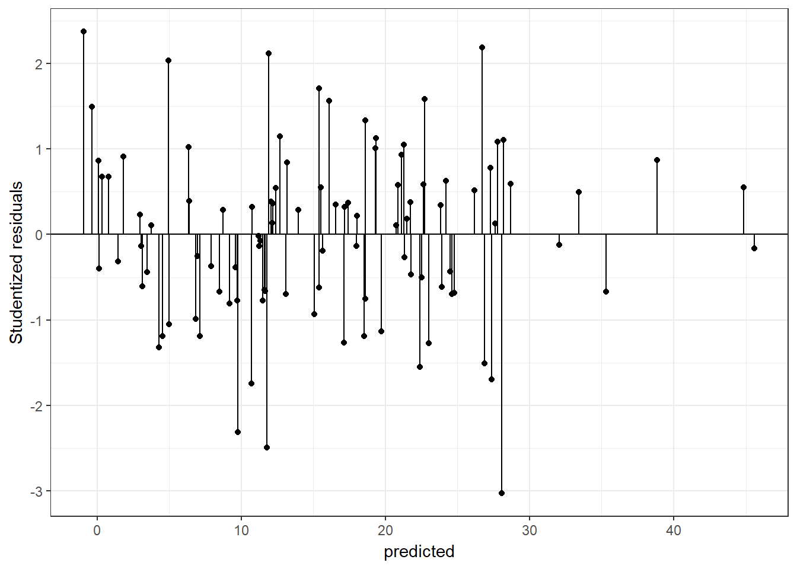

11 Multiple Linear Regression, A Short Introduction
Scientific development requires that knowledge be transferred reliably from one study to another and, as Galileo showed 350 years ago, such transference requires the precision and computational benefits of a formal language. Pearl (2009)
The formal language in the quote refers to mathematical equations. Galton for example, in late 1800s, used equations to describe the relationship between the weights of mother and daughter pea seeds. Galton’s work followed by Pearson’s contributions led to initial idea of regression.17
In the year 2016, the Web of Science reported that 60000+ abstracts of academic articles included the term “regression”. The literature is vast, oftentimes the regression is mentioned as the workhorse. It is extensively used by frequentist and Bayesian statisticians, and more generally by data scientists in hundreds of different disciplines. The explanation of the popularity of regression analysis is simple, unless they are simulated by a machine, connections between variables, whether observed or latent variables, in a data set requires more complex statistical solutions than are provided by correlation coefficients.
It is not feasible to cover regression in a book chapter. We briefly introduce basics of a relatively simple multiple regression model.
11.1 Matricies and Least Square Estimation
In a multiple regression framework, demonstrating process of model fitting based on matrices and least squares estimation should have at least two benefits; (a) a simple demystification of the procedure, (b) a workable and sensible foundation for readers with a desire to move further in the advanced topics. The following sections use two different data sets. The first data set includes only 12-cases to show calculations and is named the synthetic data. The second data is simulated with a larger sample size for illustrative purposes and is named the simulated data.
Consider a case in which data on three variables are collected and the researcher is interested in the relationship of one of the variables (i.e., the dependent variable) to the other two variables (i.e., the independent variables). Further, these three variables as continuous. The regression model in this scenario is
\[Y_i=\beta_0 + \beta_1X_{i1}+ \beta_2X_{i2}+ \epsilon_i\] where i represents individuals i=1,…,n, Y is the dependent variable, \(X_1\) and \(X_2\) are independent variables, \(\beta\)s are the regression coefficients and \(\epsilon\) is the random error term(residuals) . This model can be presented in a matrix equations
\[Y=X\beta+\epsilon\] In this more general form, all the independent variables are represented in the X matrix and the regression coefficients are represented by the \(\beta\) matrix. Let us assume the researcher has the following data
| id | Y | X1 | X2 |
|---|---|---|---|
| ind 1 | 8 | 0 | 3 |
| ind 2 | 4 | -2 | 1 |
| ind 3 | 6 | 6 | 3 |
| ind 4 | 6 | -2 | 0 |
| ind 5 | 5 | 5 | 0 |
| ind 6 | 9 | 4 | 2 |
| ind 7 | 7 | 3 | 3 |
| ind 8 | -6 | -4 | -5 |
| ind 9 | -8 | -4 | -6 |
| ind 10 | -1 | -3 | 0 |
| ind 11 | 0 | -2 | -2 |
| ind 12 | 5 | -1 | 1 |
This synthetic data set has only 12 cases. The researcher can form 2 matrices and use these to calculate \(\hat\beta\), the estimate of \(\beta\).
\[Y=\begin{bmatrix} 8\\ 4\\ 6\\ 6\\ 5\\ 9\\ 7\\ -6\\ -8\\ -1\\ 0\\ 5 \end{bmatrix},X=\begin{bmatrix} 1 & 0 & 3\\ 1 & -2 & 1\\ 1 & 6 & 3\\ 1 & -3 & 0\\ 1 & 5 & 0\\ 1 & 4 & 2\\ 1 & 3 & 3\\ 1 & -4 & -5\\ 1 & -4 & -6\\ 1 & -3 & 0\\ 1 & -2 & -2\\ 1 & -1 & 1 \end{bmatrix}\]
Using the least square procedure the \(\beta\) coefficients can easily be estimated;
\[\begin{equation} \hat\beta=(X'X)^{-1}X'Y \tag{11.1} \end{equation}\]Let’s calculate this with R for the synthetic-data;
Y=matrix(c(8,4,6,6,5,9,7,-6,-8,-1,0,5),ncol=1)
X=matrix(cbind(rep(1,12),
c(0,-2,6,-2,5,4,3,-4,-4,-3,-2,-1),
c(3,1,3,0,0,2,3,-5,-6,0,-2,1)),ncol=3)
solve(t(X)%*%X)%*%t(X)%*%Y
## [,1]
## [1,] 2.917
## [2,] 0.199
## [3,] 1.552The regression equation is \[\hat Y_i=2.9167 + 0.1989X_{i1} + 1.5519X_{i2} \] where \(\hat Y_i\) is the predicted value for the \(i^{th}\) individual. Equation (11.1) was derived to minimize the error sum of squares: \(\sum_{i=1}^n(Y_i-\hat{Y_i})^2=Y'Y-\beta'X'X\beta\).These estimates are Best Linear Unbiased Estimates.
Each independent variable has a mean of zero because they are mean-centered. Therefore, zero represents a score at the center of the distribution for both \(X_1\) and \(X_2\) and is therefore an interpretable score for both \(X_1\) and \(X_2\). When both predictors are zero (at their mean), the \((\hat{Y_i})\) is 2.92. That is, for participants with independent variables scores equal to the mean on both independent variables the expected dependent variable score is 2.92. An increase in \(X_1\) of 1 unit is predicted to correspond to an increase of 0.20 units in Y when the \(X_2\) variable is held constant. Similarly, an increase in \(X_2\) of 1 unit is predicted to correspond to an increase of 1.55 units in Y while controlling for \(X_1\). The term “controlling for” (“ceteris paribus”) is necessary to describe the effect of an independent variable in a multiple regression. The coefficients .20 and 1.55 would provide information about the association of the dependent and independent variables, if the researcher had substantial understanding of the unit of measurement for the independent variables, that is, the importance of a “1 unit” change in each variable.
11.1.1 a) “Essentially, all models are wrong, but some are useful.”
This aphorism belongs to Box and Draper (1987). The researcher should provide a convincing discussion about the relevance of the variables included in the regression model to the research questions addressed by the research. If there are important omitted variables, the beta coefficients are probably not valid. Hence the researcher is obligated to provide justifications on variable selections to claim usefulness of the results.
Consider the case below ;
#omit X2 from the synthetic-data
X2omitted=matrix(cbind(rep(1,12),c(0,-2,6,-2,5,4,3,-4,-4,-3,-2,-1)),ncol=2)
solve(t(X2omitted)%*%X2omitted)%*%t(X2omitted)%*%Y
## [,1]
## [1,] 2.92
## [2,] 1.09For our synthetic data, \(X_1\) and \(X_2\) had a correlation of .68. If the researcher fails to include \(X_2\) in the model, the coefficient for \(X_1\) is estimated to be 1.09. This is a dramatic change from 0.20. Omitting predictors that are related to both the other predictors in the model and the dependent variable will cause the coefficients for the variables that have not been omitted to be misleading. Therefore an important part of the theoretical justification of a regression model is a discussion of variables that may have been omitted.18
In addition to omitted variable issue, the validity of the results from a regression model (the usefulness) is also directly related to the sampling process and appropriate reflection of this process in the model. For example, if sampling weights exist they should not be ignored in the analyses. Sampling and regression is beyond the scope of this chapter.
11.1.2 b) Strength of relationship between the dependent and independent variables
The sum of squares for Y, which is also known as the total sum of squares, can be decomposed into two parts, the model sum of squares, which is also the sum of squares for the predicted values, and the error sum of squares. The ratio of the model sum of squares to the total sum of squares, is called the sample squared multiple correlation coefficient and symbolized as \(R^2\). The coefficient \(R^2\) measures the strength of association between the dependent variable and the independent variables. Examine the R code below given for the synthetic data;
# SS total
n=length(Y)
TotalSS=t(Y)%*%Y-(n*mean(Y)^2)
# SS Model
betahat=solve(t(X)%*%X)%*%t(X)%*%Y
ModelSS=t(betahat)%*%t(X)%*%Y-(n*mean(Y)^2)
ModelSS/TotalSS
## [,1]
## [1,] 0.879Also known as coefficient of determination, \(R^2\) is a biased estimator of the population squared multiple correlation coefficient. A more nearly unbiased estimate is the adjusted squared multiple correlation coefficient. One benefit of adjusted \(R^2\) is computational simplicity. Examine the R code below given for the synthetic data
Rsquared=ModelSS/TotalSS
#sample size
n=12
#the number of predictors
p=2
# include intercept? 1 for yes, 0 for no
int_inc=1
AdjustedRsquared=1-(1-Rsquared)*((n-int_inc)/(n-int_inc-p))
AdjustedRsquared
## [,1]
## [1,] 0.852\(R^2\) and \(R^2_{Adj}\) are useful coefficients; they provide information on how much of the variance is explained. Note that in this example \(R^2 = .879\) and \(R^2_{Adj}= .852\) are very similar. However if were \(R^2 = .25\) then \(R^2_{Adj}\) would be .08. When \(R^2\) is 1, the model successfully explains 100% of the variance in Y and when \(R^2\) is 0 the model does not explain any of the variance in Y. The coefficients \(R^2\) and \(R^2_{Adj}\) are also useful for comparing the strength of relationship for different set of predictors to predict a specific outcome. The interpretation of the \(R^2\) is similar to the interpretation of a correlation coefficient. Depending on the context a small \(R^2\) value might be regarded as substantial, or an \(R^2\) value of .7 might be regarded as low.
11.1.3 c) Residuals and influential data points
Residuals provide information for assessing potential problems with the model. Inspecting residuals can provide information about deviations from the assumed linearity of the relationships of the dependent variables to the independent variable. Inspecting the distributional properties of residuals is needed to provide evidence for the validity of statistical inference. For example, because the normality assumption is made when conducting significance tests and calculating confidence interval, residuals should follow a straight line on a Quantile-Quantile (QQ) plot. Examine the R code below given for the synthetic data:
#Predicted values
Yhat=X%*%betahat
residuals=Y-Yhat
residuals
## [,1]
## [1,] 0.4276
## [2,] -0.0708
## [3,] -2.7658
## [4,] 3.4811
## [5,] 1.0888
## [6,] 2.1839
## [7,] -1.1691
## [8,] -0.3615
## [9,] -0.8096
## [10,] -3.3199
## [11,] 0.5850
## [12,] 0.7303
qqnorm(residuals)There are three common types of residuals;
• Unstandardized residuals, that is, \(Y_i-\hat{Y_i}\). Unstandardized residuals are on the same scale as Y.
• Standardized residuals: The residuals divided by the overall standard deviation of residuals; Standardized residuals are on a z-score scale (M = 0, SD = 1). When residuals are assumed to be normally distributed, it is common practice to identify outliers as Y values for which the absolute value of the standardized residual is larger than 2. However, it should be noted that this practice can be misleading because outliers can cause the regression coefficients to be poorly estimated and/or can increase the standard deviation of the residuals and both effects can cause poor outlier detection. In addition, if the residual are in fact normally distributed approximately %5 of the participants will have residuals beyone +/- 2.00. See Wilcox (2012) for more information about outlier detection.
• Studentized residual: A studentized residual is ratio of the unstandardized residual to the estimated standard error of the residual.
When investigating residuals , these three types of residuals generally lead to same conclusions. The standardized residual are forced have a z-scale, and thus, -2 and +2 are commonly pronounced cut offs. The studentized residuals are connected to the t distribution; \(t_{n-p'-1}\) where n is the sample size \(p'\) is the number of coefficients in the model (i.e intercept+two predictors =3). It is argued that when detecting outliers in residuals, investigating the studentized residuals is more convenient (Rawlings, Pantula, and Dickey (1998)).
Scatter plots of residuals vs. predicted values can provide information about whether the assumed linear relationships between the independent variables and the dependent variable are adequate. Ideally the scatter plot should not show a detectable pattern. Here is a plot of studentized residuals vs fitted values, from a regression model fitted to simulated-data in which the linearity assumption is adequate. The simulated data have a sample size of 500 and two independent variables.
#simulate data
library(mvtnorm)
sigma <- matrix(c(4,2,2,3), ncol=2)
xx <- rmvnorm(n=500, mean=c(0,0), sigma=sigma)
yy=5+xx[,1]*2+xx[,2]*-3+rnorm(500,0,1.5)
model=lm(yy~xx[,1]+xx[,2])
errors=rstudent(model)
predicted=predict(model)
#Standardized Residuals vs Yhat
library(ggplot2)
plotdata=data.frame(errors,predicted)
ggplot(plotdata, aes(x = predicted, y = errors)) +
geom_point() + geom_hline(yintercept=0)+ ylab("Studentized residuals")+
theme_bw()+stat_smooth()The blue line above, which is determined independently from the regression model, should be compared to the horizontal line at 0. The more similar the two lines, the less likely the linearity assumption is violated.
Here is a plot, studentized residuals vs fitted values, from a mis-specified regression model on a simulated-data. The sample size is 100, there are two independent variables, and the relationship of Y and X2 is quadratic.
#simulate data
library(mvtnorm)
sigma <- matrix(c(4,2,2,3), ncol=2)
xx <- rmvnorm(n=100, mean=c(10,10), sigma=sigma)
yy=150+(xx[,1]*4)+(xx[,2]*-3)+(xx[,2]^2*1.2)+rnorm(100,0,3)
model=lm(yy~xx[,1]+xx[,2])
errors=rstudent(model)
predicted=predict(model)
#Studentized Residuals vs Yhat
library(ggplot2)
plotdata=data.frame(errors,predicted)
ggplot(plotdata, aes(x = predicted, y = errors)) +
geom_point() + geom_hline(yintercept=0)+ylab("Studentized residuals")+
theme_bw()+stat_smooth()There is a pattern indicating that the model is omitting a quadratic association.However, this graph does not inform about the source of the quadratic association, see non-linearity section below.
Unusual residuals should be inspected. Even when the residuals are substantially normally distributed and there is substantially no-pattern for the residual vs predicted value plot, there might be unusual residuals. Deciding whether a residual is unusual or not (e.g 3,4 or 5 standard deviation above), and more importantly whether to keep the observation in the data set or not requires justifications. Examine the code below to simulate data and examine the studentized residuals:
#simulate data
set.seed(04022017)
library(mvtnorm)
sigma <- matrix(c(4,2,2,3), ncol=2)
xx <- rmvnorm(n=100, mean=c(10,10), sigma=sigma)
yy=(xx[,1]*4)+(xx[,2]*-3)+rnorm(100,0,3)
tempdata=data.frame(yy,xx,id=1:100)
model=lm(yy~X1+X2,data=tempdata)
tempdata$SUTresiduals=rstudent(model)
# how many of the residuals are larger than a critical value?
# lets use alpha=.05
sum(abs(tempdata$SUTresiduals)>qt(c(.975), df=100-3-1))
## [1] 8
#which observations?
tempdata[which(abs(tempdata$SUTresiduals)>qt(c(.975), df=100-3-1)),]
## yy X1 X2 id SUTresiduals
## 13 21.39 11.49 10.29 13 2.02
## 32 8.85 11.96 10.65 32 -2.20
## 43 15.80 11.14 7.56 43 -1.99
## 50 9.21 8.00 10.21 50 2.53
## 51 19.96 10.11 8.97 51 2.02
## 68 25.33 10.96 8.33 68 2.04
## 84 2.03 7.94 7.84 84 -2.03
## 91 5.51 10.74 10.25 91 -2.10Assume we justified the use of \(t_{.975,96}\) as the critical value, in which alpha=.05. We should expect approximately \(n * .05\) (in our case 100*.05=5) cases larger than the critical value. In this particular case, even though 8 cases were identified, none of them seems unusual.
If the researcher detects an abnormality and further, if the researcher decides to remove the observation from the data, it should be done one observation at a time. The justification of removing a data point should be given clearly. A better alternative, on the other hand, may be to use an estimation method that is robust to outlying data points.
R program is convenient for investigating influential data points. Examine ?influence.measures below for the simulated data set;
summary(influence.measures(model))
## Potentially influential observations of
## lm(formula = yy ~ X1 + X2, data = tempdata) :
##
## dfb.1_ dfb.X1 dfb.X2 dffit cov.r cook.d hat
## 12 0.08 -0.02 -0.08 -0.10 1.12_* 0.00 0.08
## 33 0.09 -0.03 -0.07 -0.11 1.11_* 0.00 0.07
## 41 -0.01 -0.03 0.03 -0.04 1.10_* 0.00 0.06
## 42 0.05 -0.12 0.07 0.13 1.11_* 0.01 0.07
## 50 0.20 -0.40 0.21 0.47 0.88_* 0.07 0.03
## 64 -0.03 0.03 0.00 0.04 1.10_* 0.00 0.06
## 100 0.01 0.13 -0.15 -0.18 1.10_* 0.01 0.07This output reports 5 different measures.
In this example, cases 12, 33, 41, 42, 50, 64 and 100 are reported to be potentially influential. As they highlighted by an asterisk, they labeled as potential using the covariance ratio criteria (cov.r). This value reports the impact of an observation on the sampling variances of the regression coefficients. Values larger than \(1+(3p'/n)\) and lower than \(1-(3p'/n)\) are labeled as influential, in our case, n=100 and p’=3, hence the cut offs are 1.09 and .91.
The Dfb (DFBETAS) for each predictor reports how much the coefficient for the predictor changes when the case is removed. It is the difference between the two coefficients divided by an estimate of the standard error of the new coefficient and therefore is on the scale of a t statistic. R places an asterisk if the value is larger than \(2/\sqrt(n)\). For this specific illustration the cut off value is \(2/\sqrt(100)=.2\).
The dffit reports the change in the predicted value for the \(i^{th}\) case when the \(i^{th}\) case is removed from the data. The criterion for identifying potentially influential data points is \(2*\sqrt{\frac{p'}{n}}\).
Cook’s distance (cook.d) measures the influence of a particular case on all of the estimated coefficients and values larger than \(F_{.5,p',n-p'}\) are highlighted. Cook’s distance also measures influence of omitting a particular case of the predicted values for all of the remaining cases.
Leverage Values (Hat Diag) measure the distance of an observation compared to other independent variables. Values larger than \(2p’/n\) are considered to identify potentially influential data points.
It is researcher’s responsibility to examine any potentially influential data points.
11.1.4 d) Equal variance assumption
The standard errors of the of the coefficients are calculated as the square roots of the diagonal elements of \(\hat\sigma^2(X′X)^{-1}\), where \(\hat\sigma^2\) is the variance of the residuals. Examine the code below given for the synthetic data set:
When using the OLS with an assumption of normally distributed Y variable, the distribution of \(\beta\) can be obtained. Examine the code below given for the synthetic-data set;
#Residuals
s2 <- (t(residuals) %*% residuals)/(nrow(Y)-nrow(betahat))
Var_betahat <- s2[1,1]*solve(t(X)%*%X) The equation \(\sigma^2 (X'X)^{-1}\) is valid under the assumption of homogeneity, that is, observations on the Y variable have a common variance controlling for the independent variables. In other words, every observation of Y has the same amount of information (Rawlings, Pantula, and Dickey (1998)). With this assumption, regression coefficients are selected to minimize \(\sum_{i=1}^n(Y_i-\hat{Y_i})^2\). In this expression equal weights are given to the residuals for every case.. If homogeneity is questionable the estimator can be modified to allow for unequal weights or replaced. Alternatively the Y variable can be transformed or the estimator of the standard error can be modified (see package ‘sandwich’ Lumley and Zeileis (2015)). Otherwise, the standard error of \(\hat\beta\) could be underestimated or overestimated. Underestimation results in Type I error rates that are larger than the alpha level used in hypothesis tests and confidence intervals and over estimation results in reduced statistical power. It is common practice to plot residuals against the predicted values to study heterogeneity. Examine the code below to simulate data with unequal variance and examine the studentized residuals:
#simulate data
set.seed(03032017)
library(mvtnorm)
sigma <- matrix(c(1,.7,.7,1), ncol=2)
xx <- rmvnorm(n=100, mean=c(1,1), sigma=sigma)
#heteroscedasticity function
hts=function(v1,v2){2+.5*v1+.5*v2}
yy=5+xx[,1]*5+xx[,2]*5+rnorm(100,0,hts(xx[,1],xx[,2]))
model=lm(yy~xx[,1]+xx[,2])
#summary(model)
errors=rstudent(model)
predicted=predict(model)
#Studentized Residuals vs Yhat
library(ggplot2)
plotdata=data.frame(errors,predicted)
ggplot(plotdata, aes(x = predicted, y = errors)) +
geom_point() + geom_hline(yintercept=0)+ylab("Studentized residuals")+
geom_segment(mapping=aes(xend = predicted, yend = 0)) +
theme_bw()The variance with smaller \(\hat Y\) values are smaller. Below is a graph for a regression model on a simulated data with equal variance.

11.1.5 e) Hypothesis testing
The F test is used within a multiple regression framework to test \(H_0: \beta_1=...=\beta_p=0\) , a hypothesis stating that the p regression coefficients are all equal to zero in the population. The alternative hypothesis states that at least one coefficient is not zero. The null hypothesis can be tested using the statistic \(MS_{regression}/MS_{residual}\). This statistic follows an F distribution with \(p\) and \(n-p'\) degrees of freedom. As mentioned earlier, p is the number of predictors and p’ is the number of coefficients (p’=p if there is no intercept). Examine the code below given for the synthetic data, setting Type I error rate = .05;
# Model SS and Total SS calculated before
dfREG=2 #(p=2, predictors X1 and X2)
dfRES=9 #(n-p', 12-3)
MSreg=ModelSS/dfREG
MSres=(TotalSS-ModelSS)/dfRES
MSreg/MSres
## [,1]
## [1,] 32.8
#critical F
qf(.95,dfREG,dfRES)
## [1] 4.26
1-pf(MSreg/MSres,dfREG,dfRES)
## [,1]
## [1,] 7.39e-05The t-test is used for investigating \(H_0:\beta_{X}=\beta_{hyp}\) vs \(H_1:\beta_{X}\neq\beta_{hyp}\). Most commonly \(\beta_{hyp}=0\)
The statistic \((b_X-\beta_{hyp})/SE(b_X)\) follows a t-distribution with N-p’ degrees of freedom.Examine the code below given for the synthetic-data;
# test if the coefficient for X2 is different than 0
Bhyp=0 #hypothesized value
# estimated coefficient for X2 (see betahat calculated before)
bx2=betahat[3]
# estimated SE for X2 (see var_betahat calculated before)
se_bx2=sqrt(Var_betahat[3,3])
#t statistic
(bx2-Bhyp)/se_bx2
## [1] 5.33
# t critic
qt(.975,9)
## [1] 2.26
#p value
2*(pt(-abs((bx2-Bhyp)/se_bx2),9))
## [1] 0.00047811.1.6 f) Variable Selection
Broadly speaking there are two situations in which multiple regression is used to analyze data.
The first is illustrated by the following example. A social science researcher conducts an extensive literature review, identifies all independent variables relevant to the research questions, collects the data, estimates a model in which all independent variables are included and reports results for this model.
The second is illustrated by an example in which the researcher has data on a very large set of variables and does not know prior to analyzing the data which variables will be included in the final model that will be reported. This might happen because the researcher is working in a relatively new research area and collects data on a wide variety of variables or is conducting a secondary data analysis of a data set with a wide variety of predictors. In either case the researcher may want to begin by conducting variable selection that is using statistical results to select the best subset of many independent variables. There are several approaches to select the best subset of predictors. For example, stepwise regression, backward selection or forward selection is covered in many sources. However, in our experience, when applied to the same data set these three approaches are likely to give different answers.
A convenient approach with R is to study all possible regressions.For introductory purposes, examine the code below given for a simulated data set;
#simulate data
set.seed(02082017)
library(mvtnorm)
sigma=matrix(c(5.899559,4.277045,3.906341,
4.277045,5.817412,3.654419,
3.906341,3.654419,5.642258),ncol=3)
xx <- rmvnorm(n=200, mean=c(0,0,0), sigma=sigma)
yy=5+xx[,1]+xx[,2]*1.5+xx[,3]*2+rnorm(200,0,3)
simdata=data.frame(yy,xx,id=1:200)
library(leaps)
formula <- formula(paste("yy ~ ",
paste(names(simdata[2:4]), collapse=" + ")))
allpossreg <- regsubsets(formula,nbest=3,data=simdata)
aprout <- summary(allpossreg)
#this functions reports more than R-squared and adjusted R-squared
#examine str(aprout)
APRtable=with(aprout,round(cbind(which,rsq,adjr2),3))
APRtable=data.frame(APRtable,check.rows = F,row.names = NULL)
APRtable$ppri=rowSums(APRtable[,1:4])
kable(APRtable)| X.Intercept. | X1 | X2 | X3 | rsq | adjr2 | ppri |
|---|---|---|---|---|---|---|
| 1 | 0 | 1 | 0 | 0.753 | 0.751 | 2 |
| 1 | 0 | 0 | 1 | 0.696 | 0.695 | 2 |
| 1 | 1 | 0 | 0 | 0.630 | 0.629 | 2 |
| 1 | 0 | 1 | 1 | 0.871 | 0.870 | 3 |
| 1 | 1 | 0 | 1 | 0.811 | 0.809 | 3 |
| 1 | 1 | 1 | 0 | 0.808 | 0.806 | 3 |
| 1 | 1 | 1 | 1 | 0.890 | 0.888 | 4 |
This table reports that intercept and \(X_2\) only model results in an \(R^2\) value of .753. When all predictors included, the \(R^2\) reaches to .890; however, excluding the X1 from the full model reduced the \(R^2\) only by .019. Below is a graphical decpiction.
require(ggplot2)
ggplot(APRtable, aes(x=ppri-1, y=rsq)) +
geom_point(shape=1,size=3)+
scale_y_continuous(breaks = seq(0.5, 1, by = 0.05)) +
scale_x_continuous(breaks = seq(0, 3, by = 1))+
theme_bw()+labs(x = "R-squared")+
theme(axis.text=element_text(size=15),
axis.title=element_text(size=14,face="bold"))
ggplot(APRtable, aes(x=ppri-1, y=adjr2)) +
geom_point(shape=1,size=3)+
scale_y_continuous(breaks = seq(0.5, 1, by = 0.05)) +
scale_x_continuous(breaks = seq(0, 3, by = 1))+
theme_bw()+labs(x = "Adjusted R-squared")+
theme(axis.text=element_text(size=15),
axis.title=element_text(size=14,face="bold"))Figure 11.1: All Possible Regressions
11.1.7 g) Colliniearity
Collinearity is the degree to which the predictors are correlated among themselves. The correlation between predictors is a concern in regression because the standard errors of the coefficients increase as collinearity increase and therefore collinearity hides the individual contribution of each predictor in the regression equation.
As an illustration suppose there are two independent variables with r = .9. You MIGHT have two types of problems: The regression coefficients become unstable (i.e. they would vary a great deal across different samples obtained from the same population).
You may obtain a statistically significant \(R^2\) but not statistically significant regression coefficients.
Variance inflation factor (VIF) is helpful to detect collinearity in regard to a particular independent variables and can be applied in models two or more independent variables. The formula is \(VIF_x=\frac{1}{1-R^2_X}\) where \(R^2_X\) is the \(R^2\) when the predictor is regressed on the remaining independent variables. Large VIF values are indicator of possible multicollinearity. Commonly pronounced cut off values are 4 and 10, however VIF values are indirectly affected by sample size and variance (Obrien (2007)). When large VIF values are detected, the researcher should examine the problem. It might be justifiable to (a) leave out one of the highly correlated predictor, (b) combine the two highly correlated variable. The decision should be made cautiously given that the possible solution might be more problematic than a large VIF value, see Obrien (2007). Examine the code below given for a simulated data set;
#check correlations among predictors
cor(simdata[,2:4])
## X1 X2 X3
## X1 1.00 0.730 0.640
## X2 0.73 1.000 0.666
## X3 0.64 0.666 1.000
#the largest correlation is.73
#no multicollinearity expected
library(car)
vif(lm(yy~X1+X2+X3,data=simdata))
## X1 X2 X3
## 2.36 2.50 1.98
# no problematic VIF values11.1.8 h) Non-linearity
In the presence of a non-linear relation between the dependent variable and any given independent variable, ignoring non-linearity is simply a validity concern due to the omitted variable issue. Examining the residuals is helpful to detect non-linearity. Residuals should be plotted against predicted and independent variables. A common practice is to include higher order variables in the model, for example, if the plot indicates a non linear pattern for \(X_k\) against residuals, \(X_k^2\) might be needed in the model. The type of the non-linearity , such as quadratic, cubic or quartic should be treated accordingly. Gelman and Hill (2007) , commenting on age variable when the age and dependent variable are not linearly associated, prefers treating the variable as a categorical predictor. Alternatively transformations of the dependent or independent variable may be employed.
11.1.10 j) Centering and Scaling
Consider an example in which mother’s age at the date of her child’s birth (maternal age) is used to predict IQ at age 10. The intercept estimates average IQ for children whose mother’s maternal age was zero and cannot be meaningfully interpreted. Centering maternal age around its mean results in an intercept which estimates average IQ for children whose mother’s maternal age was at the mean of the sample and can be meaningfully interpreted. Or consider predicting absences from work from an anxiety measure. A score of zero is possible score on the anxiety measure, but does not occur in the sample. The intercept estimates average absences for employees whose anxiety level is outside the range of the data and therefore represents an extrapolation for the data. Centering around the mean for the sample solves this problem. Another approach would be to center around an anxiety score that is in the range of the data and considered high. Or consider a study of income and an index of health. Income is on a scale in which a change of 1 represents a change of 1 dollar in income. The regression coefficient is .001, which represents a trivial change in the index. Dividing X by 1000 so that a change of 1 represents a change of 1000 dollars in income results in a regression coefficient of 1, which is a small but not trivial change in the index may make the results easier to think about.
11.1.11 k) Standardized coefficients
A related topic to linear transformations is to use a z-score for the continious predictors by substracting the mean and dividing by the standard deviation. Depending on the nature of the variable, using the z scores might ease the communication between researchers. Here are interpretation examples; Raw scores: An increase in anxiety of 1 unit is predicted to correspond to an increase of 3 units in achievement, holding the remaining predictors constant. z-scores: An increase in motivation of 1 standard deviation is predicted to correspond to an increase of 0.25 standard deviations in achievement, holding the the remaining predictors constant.
11.1.12 l) Interactions
We covered the basic idea of interaction in our ANOVA section. Ignoring an interaction is an omitted variable problem because an interaction affects the interpretation of main effects. For example, suppose a researcher investigates the relationship between mathematics achievement at the end of the school year (\(Y\)), effort measured by voluntary homework completed and submitted during the year (\(X_1\)), and mathematics achievement at the end of the preceding year (\(X_2\)). Using the model \(Y_i=\beta_0+\beta_1X_{i1}+\beta_2X_{i2}+\epsilon_i\) assumes that the relationship between \(Y\) and \(X_1\) does not depend on \(X_2\) and will be misleading if the assumption is false. A common model used to investigate interactions is ;
\[\begin{equation} Y_i=\beta_0+\beta_1 X_{i1}+\beta_2 X_{i2}+\beta_3 X_{i1} X_{i2}+ \epsilon_i \tag{11.2} \end{equation}\]The slope of the relationship between \(Y\) and \(X_1\), for example, is \(\beta_1+\beta_2 X_{i2}\) indicating that the relationship depends on \(X_2\). Similarly the slope relationship between \(Y\) and \(X_2\) is \(\beta_2+\beta_1 X_{i1}\). Consideration of \(\beta_1+\beta_2 X_{i2}\) shows that \(\beta_1\) is the slope of the relationship between \(Y\) and \(X_1\) when \(X_2 = 0\) and therefore \(\beta_1\) cannot be meaningfully interpreted if \(X_2 = 0\) is not a meaningful score or is outside the range of the data. This problem can be addresses by centering \(X_1\) and \(X_2\) around their respective means. It should be noted that the model in Equation (11.2) assumes that the interaction can be accurately modeled by including \(\beta_2 X_{i1}X_{i2}\) in the model. This assumes the relationship between \(Y\) and \(X_1\) is linear when is \(X_2\) controlled. Violations of assumption of the model in Equation (11.2) should be investigated.R can be helpful in interpreting interactions by 3-dimension graphs. Examine the code below given for a simulated data set to highlight the use of R package visreg (Breheny and Burchett (2016))
## manipulate simdata
## Yvar: dependent variable on no interaction
simdata$Yvar=3+simdata$X1*2+simdata$X2*3+rnorm(nrow(simdata),0,5)
library(visreg)
model=lm(Yvar~X1+X2+X1*X2,data=simdata)
visreg2d(model, "X1", "X2", plot.type="persp")The surface is flat indicating no interaction.
## manipulate simdata
## Yvarint: dependent variable on a interaction
simdata$Yvarint=3+simdata$X1*1+simdata$X2*2+simdata$X1*simdata$X2*1.5+rnorm(nrow(simdata),0,5)
library(visreg)
model2=lm(Yvarint~X1+X2+X1*X2,data=simdata)
visreg2d(model2, "X1", "X2", plot.type="persp")The surface is no longer flat in the presence of an interaction.
11.1.13 m) Estimators
To be added
11.1.14 n) Robust Regression
To be added
11.1.15 o) Sample size and statistical power
To be added
11.1.16 p) Reliability of variables
To be added
11.1.17 q) The nature of the variables
To be added
11.1.18 r) Multiple dependent variables
To be added
11.1.19 s) Missing variables
To be added
References
Pearl, Judea. 2009. Causality: Models, Reasoning, and Inference. 2nd ed. Cambridge;New York: Cambridge University Press.
Box, George E. P., and Norman R. Draper. 1987. Empirical Model-Building and Response Surfaces. New York: Wiley.
Wilcox, Rand R. 2012. Introduction to Robust Estimation and Hypothesis Testing. 3rd;3; US: Academic Press.
Rawlings, John O., Sastry G. Pantula, and David A. Dickey. 1998. Applied Regression Analysis: A Research Tool. 2nd ed. New York: Springer.
Lumley, Thomas, and Achim Zeileis. 2015. Sandwich: Robust Covariance Matrix Estimators. https://CRAN.R-project.org/package=sandwich.
Obrien, Robert M. 2007. “A Caution Regarding Rules of Thumb for Variance Inflation Factors.” Quality and Quantity 41 (5).
Gelman, Andrew, and Jennifer Hill. 2007. Data Analysis Using Regression and Multilevel/Hierarchical Models. Cambridge;New York; Cambridge University Press.
Breheny, Patrick, and Woodrow Burchett. 2016. Visreg: Visualization of Regression Models. https://CRAN.R-project.org/package=visreg.
This might lead to a clue on popularity of controlled randomized trials.↩